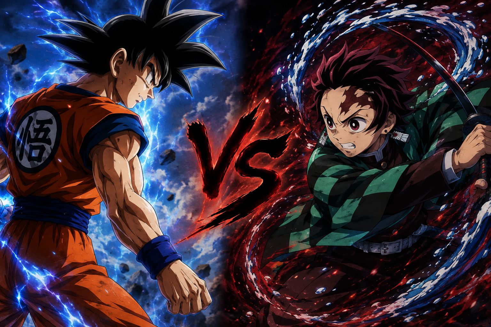

دراغون بول
الشخصيات

غوكو
غوكو هو الشخصية الرئيسية في دراغون بول، وهو محارب سايان قوي يسعى لحماية الأرض من الأشرار.
اضغط لمعرفه المزيد
فيجيتا
t فيجيتا هو أمير السايان وأحد أقوى المحاربين في دراغون بول، وهو منافس غوكو ولكنه يتحالف معه أحيانًا لحماية الأرض.
اضغط لمعرفه المزيد
غوكو
غوكو هو الشخصية الرئيسية في دراغون بول، وهو محارب سايان قوي يسعى لحماية الأرض من الأشرار.
اضغط لمعرفه المزيد